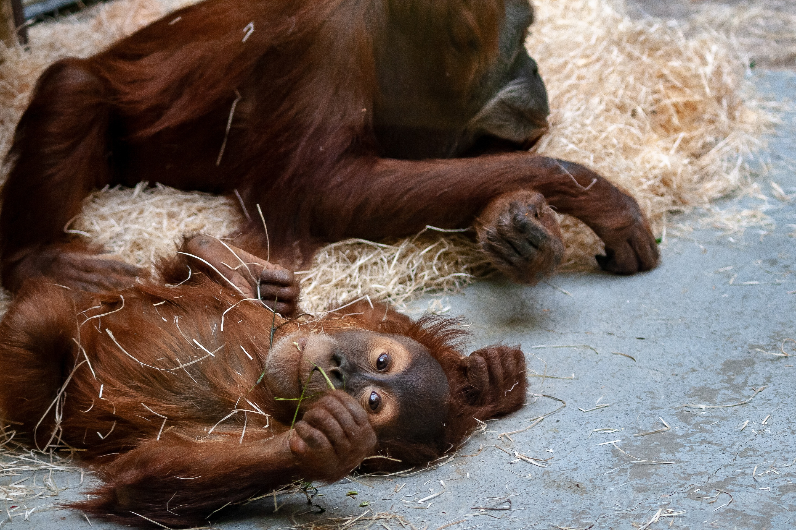

Orangutans
Breeding and survival of this species is based largely on the tropical fruit source, which is being compromised because periods of drought that are essential to trigger flowering and fruiting are being disrupted by climate change.
